7 Medidas centrales y medidas de dispersión: la media y la varianza.
7.1 Introducción
Al estudiar el diagrama de caja (boxplot) hemos visto que este gráfico se describe mediante los cinco números, que son:
- mínimo y máximo,
- primer y tercer cuartil (25% y 75%), y
- segundo cuartil (50%).
De estos valores, el segundo cuartil, que se corresponde con la mitad de los valores, representa una estimación del centro de la distribución, y por eso lo llamamos mediana. La distancia entre el primer y tercer cuartil es lo que se conoce como rango intercuartil (se suele representar por sus siglas en inglés, IQR), y nos da una indicación de la dispersión: cuanto mayor mayor es la dispersión de nuestros valores, más alejados estarán del centro, y por lo tanto habrá mayor distancia entre el primer y el tercer cuartil.
Una de las mayores ventajas de la mediana y del rango intercuartil es que son estadísticos robustos, es decir, tiene una alta robustez a los valores atípicos. Como en el cálculo del rango intercuartil no se tienen en cuenta los valores extremos, su valor variará muy poco si aparecen nuevas observaciones atípicas (outliers). Como sus valores no dependen de la distribución de los datos, a estos estadísticos se los conoce como no paramétricos.
Existen otras estadísticos, llamados paramétricos, que, en determinadas condiciones, tienen ventajas frente a los no paramétricos. Los principales son la media aritmética, o simplemente, media, y la varianza.
7.2 Recursos utilizados
En este ejercicio usaremos diversos datos y gráficas realizados en Excel. Para facilitar el análisis, puede descargarse esta hoja Excel, con muchas tablas y gráficos, en el enlace a continuación.
7.3 La media aritmética: un ejemplo de cálculo.
Definición
La media aritmética de un conjunto de valores es el valor central que se obtiene al dividir la suma de todos los valores por la cantidad de valores. Es una medida de tendencia central que proporciona un punto de referencia para el conjunto de datos.
Deducción de la Fórmula:
Supongamos que tenemos un conjunto de \(n\) valores numéricos: \(x_1, x_2, x_3, \ldots, x_n\).
Suma de Todos los Valores: Primero, sumamos todos los valores del conjunto. Matemáticamente, esto se expresa como:
\[ S = x_1 + x_2 + x_3 + \cdots + x_n \]
Cantidad de Valores: Luego, contamos cuántos valores hay en el conjunto. Este número es \(n\).
División de la Suma por la Cantidad de Valores: Finalmente, dividimos la suma total \(S\) por la cantidad de valores \(n\) para obtener la media aritmética:
\[ \text{Media Aritmética} = \frac{S}{n} \]
Expresión General: Sustituyendo la suma \(S\) en la fórmula, tenemos:
\[ \text{Media Aritmética} = \frac{x_1 + x_2 + x_3 + \cdots + x_n}{n} \]
Ejemplo:
Supongamos que tenemos los siguientes valores: \(5, 7, 9\).
Suma de los Valores: \[ S = 5 + 7 + 9 = 21 \]
Cantidad de Valores: \[ n = 3 \]
Cálculo de la Media Aritmética: \[ \text{Media Aritmética} = \frac{21}{3} = 7 \]
Entonces, la media aritmética de los valores \(5, 7, 9\) es \(7\).
La media de una muestra se representa habitualmente mediante el símbolo
\[\bar{x}\] y, de una manera más formal, su valor se obtiene mediante la fórmula siguiente:
\[{\bar{x}={\frac {1}{n}}\sum _{i=1}^{n}x_{i}}\] El signo \(\sum\) se conoce como sumatorio, e indica que ese término consiste en la suma de los \(x\) valores desde el primero hasta el valor \(n\). Expresado mediante una formulación matemática,
\[{\bar{x}={\frac {1}{n}}\sum _{i=1}^{n}x_{i}={\frac {x_{1}+x_{2}+\cdots +x_{n}}{n}}}\] lo quiere quiere decir: “la suma de todos los valores observados dividido entre el número de estos valores”.
La media es lo que conocemos como un valor central, ya que representa el centro de nuestro conjunto de números. Como es el centro de nuestro conjunto de datos, la suma de las distancias de todos los valores a este valor central es \(cero\). Más adelante veremos la importancia de este hecho, al hablar de la dispersión y las formas de cálculo de la misma. Como hemos visto, la media de una muestra se representa como \(\bar{x}\), mientras que la media de una población se representa con la letra griega mu: \(\mu\). En ambos casos, el cálculo se realiza de forma idéntica.
Volvamos a nuestro ejemplo de la altura de un grupo de alumnos, para realizar los cálculos según el modelo que hemos descrito. En nuestro caso, la altura media de nuestros alumnos (la media de nuestro conjunto de números) se calcula como:
\[ \bar{x} = \frac{153+135+140+140+175+138+145+154+152+159+154}{11} = 149,54 \] Utilicemos una hoja de cálculo para guardar nuestros valores.

La fórmula para obtener la media en la hoja de cálculo, por ejemplo en la versión en español de Microsoft Excel, es =PROMEDIO(...), donde los puntos suspensivos deben sustituirse por el rango a calcular. En nuestro ejemplo, introduciríamos la fórmula en la celda B13como =PROMEDIO(B2..B12) (Para más detalles, verificar la hoja Excel adjunta).
Para representar más cómodamente nuestros valores, dibujamos un punto a la altura de cada alumno,
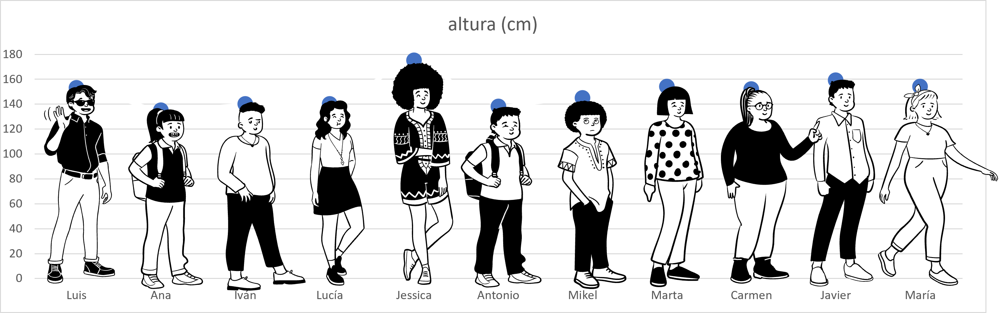
y eliminamos del gráfico los dibujos de nuestros alumnos; así hemos convertido nuestro dibujo en un diagrama de puntos:
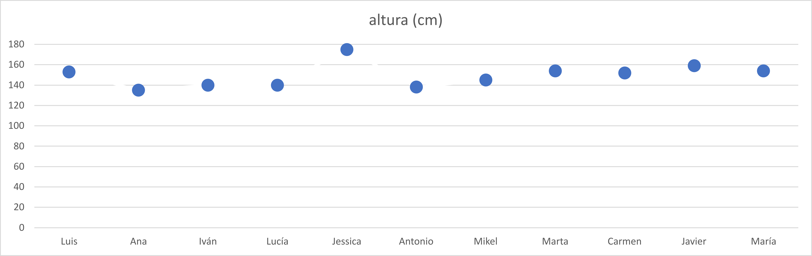
Para representar la media, aunque la media es un valor único, necesitamos añadir una columna a la derecha de nuestros datos, que rotulamos en la fila 1, celda C como altura media, e introducimos en cada una de las celdas desde C2hasta C12la fórmula del promedio, con el valor de nuestro rango de datos (Verificar hoja de cálculo). A continuación, designamos nuestro rango de datos para hacer un gráfico de puntos, y hacemos un zoom en los valores de manera que el eje Y se escale mejor entre los valores mínimo y máximo. Por último, hacemos unos ajustes en el formato para dibujar las líneas verticales que nos representan la distancia de cada valor a la media.
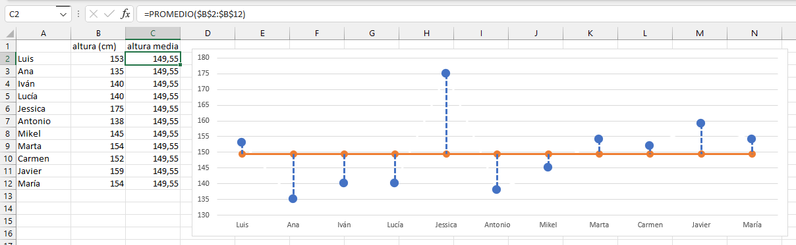
Si verificamos el eje \(Y\) , veremos que en este gráfico hemos ajustado la escala respecto al gráfico anterior, situando el mínimo en \(130\). Esto permite visualizar las diferencias con mucha más claridad. Hemos representado la media \(\bar{x}\) como una línea, y hemos dibujado unas líneas que unen cada valor individual con la media, que se sitúa en el valor \(149,55\), tal como calculamos más arriba.
Hemos representado la media como una serie de puntos unidos por una línea amarilla. Representamos en azul nuestros valores, uniendo cada valor con la línea media mediante una línea de puntos vertical. A partir de ahora, por conveniencia, eliminaremos los puntos en la linea media, dejando sólo la línea.
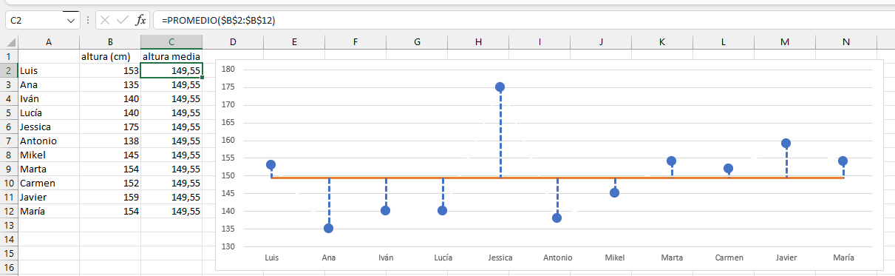
Esta línea azul de puntos representa la distancia de cada valor a la media. Usaremos esta distancia para calcular una distancia media, que será una medida de la dispersión de nuestros valores.
Hemos visto que para describir un conjunto de números, en nuestro ejemplo, las medidas de la altura de un grupo de estudiantes, existe un valor, la media de este conjunto, que nos describe el centro de los valores. En nuestro ejemplo, si nuestro grupo tuviese un solo niño, éste tendría \(149,55{\ }cm\) de altura.
¿Es suficiente con este valor para describir el conjunto de valores? Vamos a ver que no: diferentes conjuntos de valores pueden proporcionar el mismo valor medio, y sin embargo los grupos pueden ser muy diferentes.
Veamos un caso extremo. Comparemos dos grupos, uno formado por individuos iguales y otro formado por diez individuos iguales y uno distinto. Para ello usaremos nuestra hoja de cálculo:
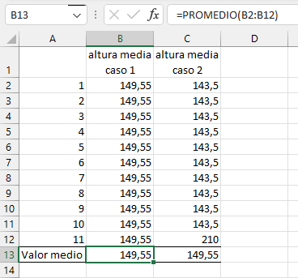
¿Podemos describir adecuadamente los valores de la altura de cada uno de los grupos utilizando el valor medio? Parece evidente que no, ya que a partir de diferentes valores de altura estamos obteniendo el mismo valor medio. Sin embargo, uno de los grupos es más alto que el otro, si no fuera por un sólo individuo que aparentemente distorsiona el cálculo. Podríamos incluir nuestro grupo original, y veremos que los tres grupos son diferentes, aunque su valor medio es idéntico.
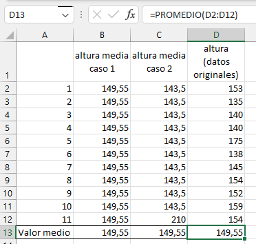
Si nos ayudamos de un gráfico equivalente al que hemos utilizado antes, vemos estas diferencias con claridad:
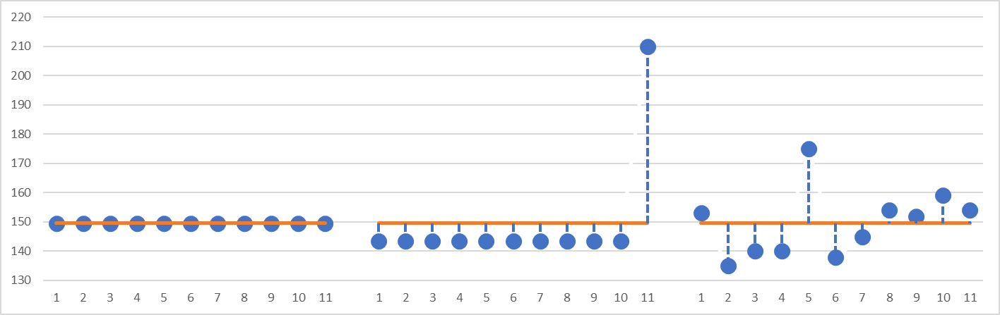
Aunque el valor medio de estos tres grupos de datos es idéntico, parece claro que los tres grupos son muy distintos en su composición, y por lo tanto la media no es suficiente para describir con suficiente precisión cada uno de los grupos. Necesitamos un valor adicional, que nos indique de qué forma los valores se alejan del valor medio. Para ello, vamos a introducir un concepto nuevo: la medida de la dispersión.
7.4 Las medidas de dispersión: la varianza y la desviación típica
Como hemos visto en el apartado anterior, diferentes conjuntos de datos pueden tener el mismo valor medio y sin embargo ser muy diferentes. En la última gráfica que hemos visto, el primer grupo se caracteriza por tener todos sus valores idénticos; el segundo tiene todos sus valores idénticos menos uno, que está muy apartado del resto, y el tercero tiene todos sus valores diferentes.
Ahora que conocemos cómo calcular un valor resumen de un conjunto de datos, podríamos utilizar una medida semejante para describir de qué forma en cada caso los valores se separan de la media. Podríamos utilizar una distancia media: calculamos las diferencias entre cada valor y la media, y hacemos su promedio: esto debería darnos una indicación de la magnitud de la separación de los valores en cada uno de los tres grupos.
Usemos la hoja de cálculo para ello:
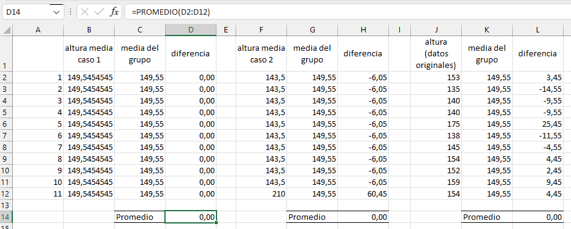
Algo parece que no está funcionando aquí: el promedio de las diferencias es cero en los tres casos; no podemos usar este cálculo para calcular la dispersión. Pero esto es esperable: ya que la media es un valor central, como hemos visto antes, la suma de las diferencias de todos los valores respecto de su media debe ser forzosamente cero, y esto es lo que estamos obteniendo.
Para encontrar una solución, vamos a recurrir al viejo teorema de Pitágoras, que si recuerdas, nos dice que, en un triángulo rectángulo, el cuadrado de la hipotenusa es igual a la suma de los cuadrados de los catetos (una explicación gráfica muy divertida en el anexo …): \[ h^2= a^2+b^2 \] Esta fórmula es la base del cálculo de la distancia entre dos puntos:
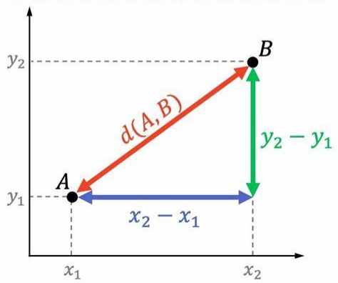
\[ d(A,B)=\sqrt{(x_2-x_1)^2+(y_2-y_1)^2} \] Podemos adaptar esta fórmula al cálculo de nuestra distancia media. Como estamos calculando la distancia en una dimensión, sólo necesitamos la coordenada \(X\). Si tenemos en cuenta un solo punto, esta distancia \(d\) sería: \[ (d{\ }del{\ }valor{\ }1{\ }a{\ }la{\ }media)^2=(x_1-\bar{x})^2 \] ¡El hecho de elevar al cuadrado las diferencias nos da la solución! Las diferencias negativas ya no son un problema porque sabemos que al elevar un numero negativo al cuadrado, el resultado es positivo; de esta manera conseguimos que las diferencias no se anulen. Ahora sí podemos calcular una distancia media \(\bar{d}\) entre el conjunto de puntos y su media, calculando el promedio de las diferencias elevadas al cuadrado: \[ (\bar{d}{\ }de{\ }los{\ }n{\ }valores{\ }a{\ }la{\ }media)^2=\frac{(x_1-\bar{x})^2 + (x_2-\bar{x})^2+\cdots+(x_n-\bar{x})^2}{n} \]
y utilizando la notación que hemos aprendido antes,
\[ (\bar{d}{\ }de{\ }los{\ }n{\ }valores{\ }a{\ }la{\ }media)^2={\frac {1}{n}}\sum _{i=1}^{n}(x_{i}-\bar{x})^2 \]
Al igual que en el cálculo de la distancia entre dos puntos, sólo tenemos que extraer la raíz cuadrada de este valor para obtener la distancia media, que es el parámetro que estábamos buscando.
La distancia media \[(\bar{d}{\ }de{\ }los{\ }n{\ }valores{\ }a{\ }la{\ }media)^2\] se conoce en estadística como varianza, y su raíz cuadrada es lo que se conoce como desviación típica. La varianza de una población se representa en estadística con el signo de la letra griega sigma minúscula elevada al cuadrado, \(\sigma^2\), y la desviación típica, mediante la letra \(\sigma\). En el caso de una muestra, la varianza se representa como \(s_x^2\), y la desviación típica, como \(s_x\).
Es importante resaltar que la desviación típica es una medida de la distancia media de los valores de una población a su media, y por lo tanto tiene dimensión, la misma que las medidas originales. La varianza, al estar elevada al cuadrado, no tiene una dimensión, o, mejor dicho, tiene la de la medida al cuadrado.
Con estos nuevos hallazgos, recalculamos nuestra hoja de cálculo:
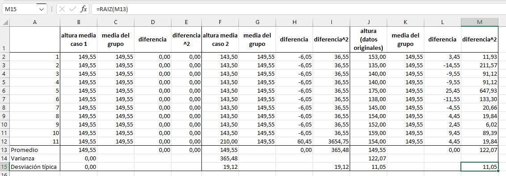
Vamos a analizar con detalle esta tabla.
En la columna J tenemos nuestra población original de 11 alumnos, con las alturas que hemos medido. En la columna B hemos supuesto que todos los alumnos fuesen iguales, con la misma altura del valor medio de los datos originales. En la columna F hemos simulado otro grupo, con todos los valores iguales excepto uno, y con la misma media que los otros dos grupos.
A la derecha de cada columna de medias, tenemos la columna de diferencias (columnas D, H y L), y en la fila 13, nuestro primer intento de calcular una dispersión media; intento fallido, puesto que obteníamos el valor \(0\) para los tres grupos.
En la siguiente columna a la derecha, para los tres grupos (columnas E, Iy M), hemos elevado al cuadrado la distancia de cada valor a la media, siguiendo los hallazgos que nos ha proporcionado el teorema de Pitágoras y la fórmula de la distancia entre dos puntos. En la fila 13 de estas columnas, calculamos el promedio de la distancia a la media al cuadrado: esta vez el resultado ya no es cero, sino que obtenemos el valor de la varianza, de acuerdo con la fórmula que hemos deducido más arriba. En la fila 14 (columnas B, F y J)utilizamos la fórmula de la hoja de cálculo para la varianza poblacional (más detalles posteriormente), y vemos que coincide exactamente con el promedio de las diferencias al cuadrado, tal como debe ser, ya que en eso consiste la fórmula que hemos deducido.
Por último, en la fila 15calculamos la desviación típica de ambas formas, con la fórmula de la hoja de cálculo para la desviación típica poblacional (columnas B, Fy J), que Excel llama desviación estándar, y como la raíz cuadrada del promedio calculado antes (columnas E, Iy M). De nuevo, ambos valores coinciden exactamente, como esperamos.
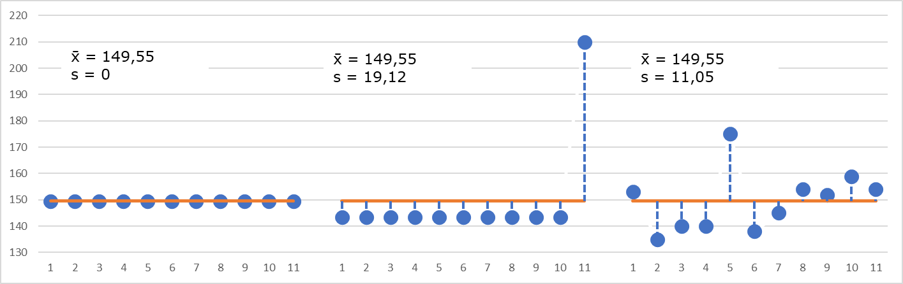
Ahora sí tenemos una forma más completa de describir nuestro conjunto de valores. Aunque el valor medio es el mismo en los tres casos, la dispersión de los valores es muy distinta.
¿Son suficientes estos dos parámetros que hemos calculado para describir un conjunto de datos? La respuesta a esta pregunta es sí y no. La explicación es que, más allá de los valores numéricos que hemos obtenido, la visualización gráfica de los valores nos debe hacer reflexionar.
En el primer grupo, todos los valores son iguales a la media. La variación es cero. Son valores que hemos simulado en nuestra hoja de cálculo, pero difícilmente en el mundo real encontraremos una población en la que todos sus valores, en este caso, la altura de un grupo de alumnos, sean idénticos.
En el segundo grupo, todos los valores son idénticos, salvo uno, que se distancia mucho. ¿Debemos aceptar esto como bueno? En realidad, ¿es cierto que el valor medio de este grupo sea el mismo que el del primero? Para responder a esta pregunta debemos recurrir a nuestra experiencia, la estadística no nos da fórmulas mágicas. Pero, con un poco de sentido común, parece que el caso extremo que aparece en este grupo no es coherente con el resto de valores. Es lo que se llama un valor anormal o extraño (en inglés, outlier), y debe hacernos reflexionar sobre si el valor es correcto y realmente pertenece a esta población, o es un error de medida. O, simplemente, un valor que corresponde a otro grupo y que por error hemos situado en éste. La decisión de eliminar o no un valor anormal es una de las decisiones más complejas en estadística, que pueden tener una influencia enorme en la interpretación de los datos, y por lo tanto, hay que hacer con sumo cuidado. En este caso, extremo y artificial, el valor anormal debería ser eliminado, ya que, en realidad, todos los valores restantes son idénticos y más bajos que los del grupo 1. No tiene sentido lógico decir que sus medias son idénticas.
En el tercer grupo todos los valores son diferentes, y no podemos decir nada especial sobre sus valores individuales. Hay un valor que se destaca del resto, pero ¿podemos afirmar que es anormal? Seguramente, no con seguridad. De nuevo la experiencia debe indicarnos cómo proceder, aunque en este caso no tendría sentido eliminar este valor. En la situación real, todos conocemos a niños que han pegado el estirón antes que sus compañeros, y en algunos casos, pueden llegar a ser mucho más altos (o más bajos, si han tenido un retraso en este estirón) La experiencia nos dice que no es seguro que este valor sea realmente anormal, y por lo tanto, deberíamos conservarlo.
7.5 Las limitaciones de la media y la desviación típica
En ocasiones nos enfrentamos a conjuntos de datos con valores de media y desviación típica idénticos o muy parecidos, pero que en realidad son muy diferentes. Veamos un ejemplo, semejante a los que hemos visto hasta ahora.
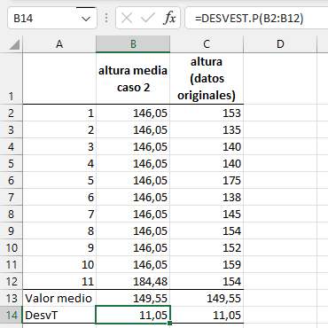

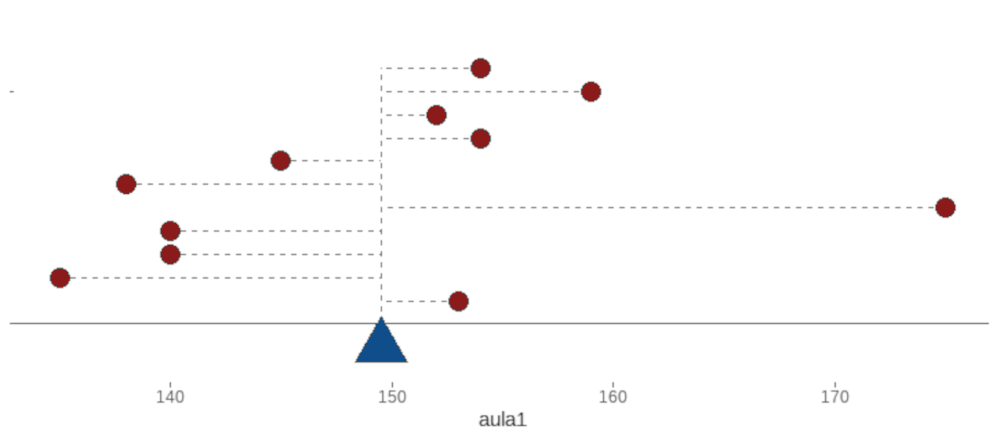
En este caso, vemos que tanto la media como la desviación típica son idénticos, y sin embargo los datos son muy diferentes, tal como nos muestra el gráfico de dispersión que hemos estado utilizando:
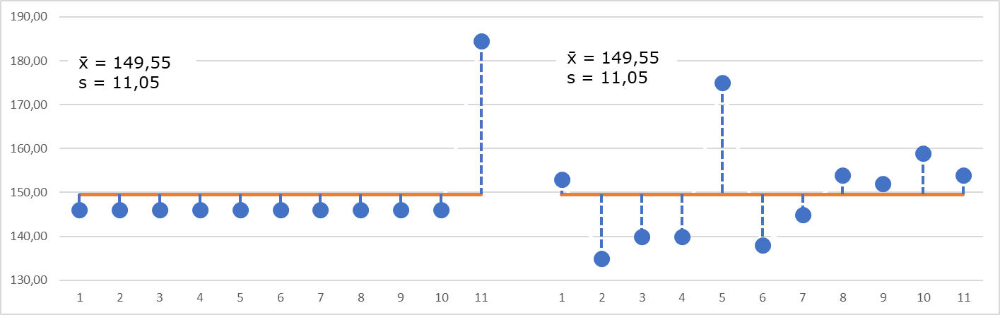
La existencia de valores anormales o extremos muestra una de las debilidades de la media y la desviación típica como descriptores de un conjunto de datos: ambos son muy sensibles a los casos extremos.
Por eso, solo deberíamos usar la media y la desviación típica cuando estamos razonablemente seguros de que los datos tienen una forma aproximadamente simétrica y equilibrada, como la famosa campana de Gauss (distribución normal), que podemos relacionar con el boxplot, tal como vemos en el gráfico a continuación,
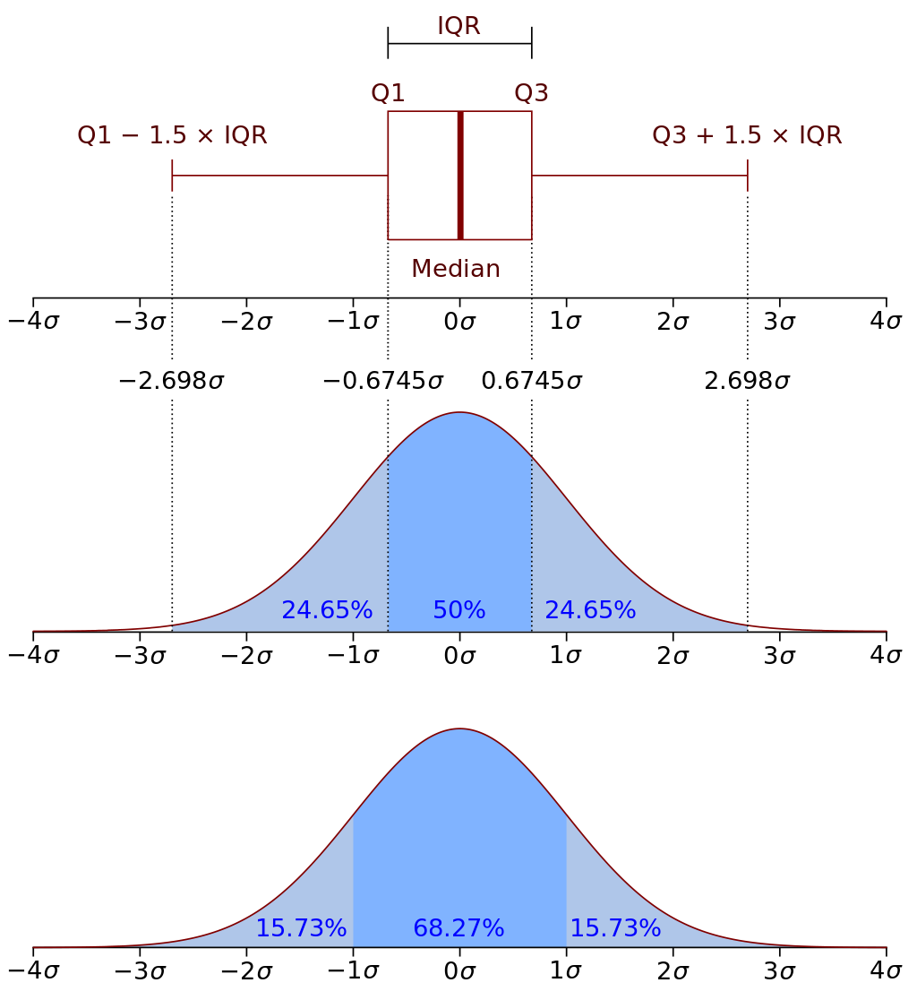
En otros casos, especialmente cuando hay valores muy altos o muy bajos, la mediana y el rango intercuartílico (que ya vimos en el boxplot) son estadísticos más robustos, es decir, más resistentes a los extremos y más seguros para describir el conjunto de datos.
Esta diferencia entre estadísticos sensibles y robustos es clave para elegir bien qué medidas usar según el tipo de datos.
Ventajas e inconvenientes de las medidas paramétricas
Ventajas
- Precisión y Sensibilidad: La media y la varianza son muy precisas y sensibles a todos los valores del conjunto de datos.
- Propiedades Matemáticas: La media y la varianza tienen propiedades matemáticas deseables, como la facilidad para realizar operaciones algebraicas.
- Distribución Normal: Son especialmente útiles si los datos siguen una distribución normal, ya que permiten aprovechar las propiedades de esta distribución.
Inconvenientes
- Sensibilidad a Valores Atípicos: La media y la varianza pueden ser distorsionadas significativamente por valores atípicos.
- Requieren Suposiciones: Su uso eficaz a menudo requiere que los datos sigan ciertas suposiciones, como la normalidad y la homogeneidad de la varianza.
Ventajas e inconvenientes de las medidas no paramétricas
Ventajas
- Robustez: La mediana y el rango intercuartil son menos sensibles a valores atípicos y distribuciones asimétricas.
- Flexibilidad: No requieren suposiciones fuertes sobre la distribución de los datos, lo que las hace útiles para una amplia variedad de distribuciones.
- Resumir Datos: Son excelentes para resumir datos en situaciones en las que los valores extremos podrían distorsionar la interpretación.
Inconvenientes
- Menor Sensibilidad: La mediana y el rango intercuartil no utilizan toda la información de los datos y pueden ser menos sensibles a cambios en los datos.
- Menor Precisión en Ciertos Contextos: En situaciones donde los datos siguen una distribución normal, las medidas no paramétricas pueden ser menos precisas.
Las medidas paramétricas son útiles para datos que siguen suposiciones específicas, como la normalidad, y son precisas y sensibles, pero pueden ser distorsionadas por valores atípicos. Las medidas no paramétricas son robustas y flexibles, ideales para distribuciones no normales y resistentes a valores atípicos, aunque pueden perder sensibilidad y precisión en ciertos contextos.
7.6 Resumen
Las medidas paramétricas, como la media y la varianza, y las no paramétricas, como la mediana y el rango intercuartil, proporcionan información sobre el centro y la dispersión de la distribución de los datos, y tienen diferentes ventajas e inconvenientes según el contexto y los datos con los que se trabaja.
En el capítulo siguiente aplicaremos estos conceptos al análisis de un conjunto de datos de fabricación de queso. Veremos también algunas formas de detectar visualmente los valores extremos que pueden afectar a la media, usando histogramas y boxplots, sin necesidad de cálculos complicados.